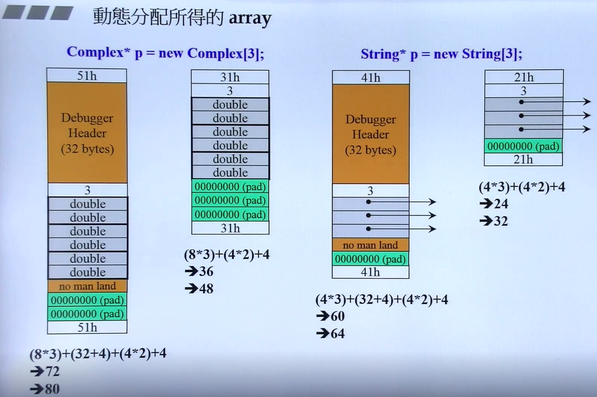
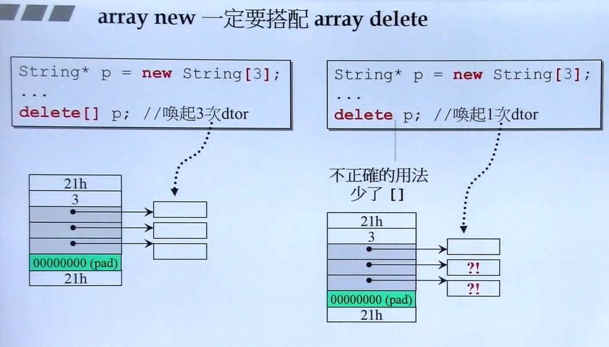
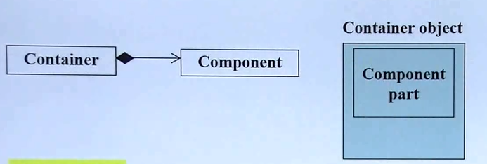
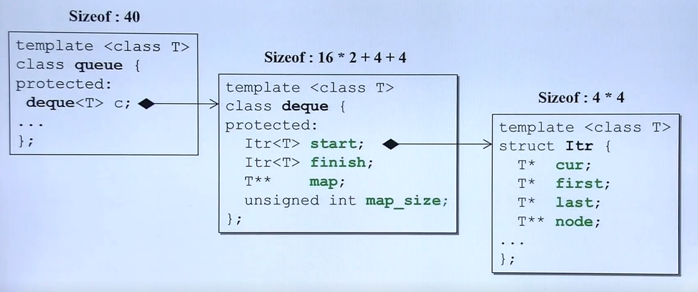
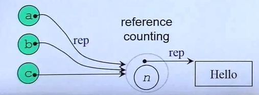
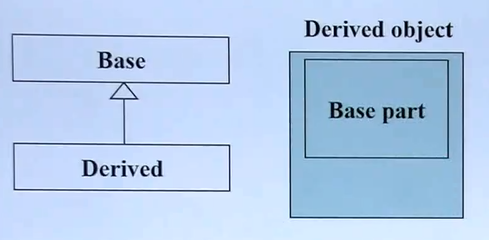
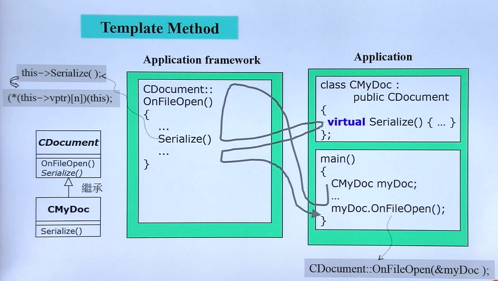

1. 基于对象的程序设计
只包含单一类的程序设计，存在两种类型的类的设计思想：是否含有指针成员。
编写类class的良好习惯：
-
数据私有化private
-
构造函数尽量使用初始化列表initialization list，效率高。
-
参数与返回值尽量引用传递by reference，返回的值只要不是local object，尽量使用引用返回。
-
在类体中的函数需要加const的尽量加，不会修改成员变量。
1.1 不含指针成员的类
Complex class
#ifndef __COMPLEX__
#define __COMPLEX__
class Complex {
public:
Complex (double r = 0, double i = 0) : re (r), im (i) { }
Complex& operator += (const Complex&);
double real () const { return re; }
double imag () const { return im; }
private:
double re, im;
friend Complex& __doapl (Complex&, const Complex&);
};
inline Complex& __doapl (Complex* ths, const Complex& r){
ths->re += r.re;
ths->im += r.im;
return *ths;
}
// class member function
inline Complex& Complex::operator += (const Complex& r){
return __doapl (this, r);
}
// class non-member function, global function
inline Complex operator + (const Complex& x, const Complex& y){
// temporary object, return by value
return Complex (real (x) + real (y), imag (x) + imag (y));
}
inline Complex operator + (double x, const Complex& y){
return Complex (x + real (y), imag (y));
}
inline Complex operator + (const Complex& x, double y){
return Complex (real(x) + y, imag(x));
}
// class non-member function, global function
inline ostream& operator << (ostream& os, const Complex& r){
// return by referance due to the example of `cout << c1 << c2 << endl`
return std::cout << '(' << real(r) << ', ' << 'imag(r)' << ')';
}
#endif
1.2 含有指针成员的类
String class
#ifndef __MYSTRING__
#define __MYSTRING__
#include<cstring>
class String {
public:
// Big Three
String(const char* cstr); // constructor func
String(const String& str); // copy constructor func
String& operator=(const String& str); // copy asignment func
~String(); // destructor func
char* get_c_str() const { return m_data; }
private:
char* m_data;
};
inline String::String(const char* cstr = 0){
if (cstr){
m_data = new char[strlen(cstr) + 1];
strcpy(m_data, cstr);
}
else{
m_data = new char[1];
*m_data = '\0';
}
}
inline String::String(const String& str){
m_data = new char[strlen(str.m_data) + 1];
strcpy(m_data, str.m_data); // deep copy
}
inline String& String::operator=(const String& str){
// checking self-assignment
if (this == &str){
return *this;
}
delete[] m_data; // preventing memory leak
m_data = new char[strlen(str.m_data) + 1];
strcpy(m_data, str.m_data);
return *this;
}
inline String::~String(){
delete[] m_data;
}
#include<iostream>
using namespace std;
ostream& operator<<(ostream& os, const String& str){
os << str.get_c_str();
return os;
}
#endif
1.3 new
先分配内存，再调用构造函数。 new是运算符，内部调用C语言的malloc函数。
Complex* pc = new Complex(1, 2); 编译器转化为：
Complex *pc;
// operator new是函数名，内部调用malloc(n)
void* mem = operator new( sizeof(Complex) ); // 1. 分配内存
pc = static_cast<Complex*>(mem); // 2. 类型转换
pc->Complex::Complex(1, 2) // 3. 构造函数
// 3等价于Complex::Complex(pc, 1, 2); pc即this

1.4 delete
先调用析构函数，再释放内存。delete是运算符，内部调用C语言的free函数。
注意：delete存在两个删除动作。1.先调用析构函数，把类中动态分配的内存空间"Hello"删除；2.再将指向字符串的指针ps删除。
String* ps = new String("Hello");
...
delete ps;
编译器转化为：
String::~String(ps); // 析构函数
// operator delete是函数名，内部调用free(ps)
operator delete(ps); // 释放内存
array new与array delete搭配使用，否则存在内存泄漏。

1.5 this
类的成员函数在内存中只有一份，默认存在this指针，指向实例化的对象，类的成员函数是通过this指针来处理每个对象对应的数据。隐式将this指针即&c1对象地址作为参数传递传递给类成员函数。
Complex c1, c2;
c1.real(); ---> Complex::real(&c1);
c2.real(); ---> Complex::real(&c2);
1.6 static
static data members // 静态数据，与类的对象脱离
static member func // 静态函数，与类的成员函数相同，内存中只存在一份
静态函数与类成员函数最大区别在于：没有this指针
class Account {
public:
static double m_rate;
static void set_rate(const double& x) { m_rate = x; }
};
double Account::m_rate = 8.0; // 静态数据成员一定要在类体外定义
int main() {
// 静态函数的调用两种方法
// 类名调用
Account::set_rate(5.0);
// 对象调用
Account a;
a.set_rate(5.0);
}
1.7 单例模式
一个类只存在一个对象，实现方法是将类的构造器私有化private与static的综合应用。
class Singleton {
public:
static Singleton& getInstance() { return a; } // 获取单例对象。
void setup() { ... }
private:
Singleton(); // 构造器私有化，外界禁止创建对象。
Signleton(const Singleton& rhs);
static Singleton a; // 定义唯一一个静态单列对象。
...
};
Singleton::getInstance.setup(); // 获取单例对象并调用对象的类成员函数setup()。
上述单例模式并非最佳写法，待优化的问题是：对象a已经在内存中构建，即使不使用。最佳写法如下：
class Singleton {
public:
static Singleton& getInstance();
void setup() { ... }
private:
Singleton();
Signleton(const Singleton& rhs);
...
};
// 单例对象a在使用时内存构建，getInstance函数退出时，static变量依然存在。
Single::getInstance() {
static Singleton a;
return a;
}
Singleton::getInstance.setup();
1.8 class template
template
template<typename T>
class Complex {
public:
Complex (T r = 0, T i = 0) : re (r), im (i) { }
Complex& operator += (const Complex&);
T real () const { return re; }
T imag () const { return im; }
private:
T re, im;
friend Complex& __doapl (Complex&, const Complex&);
};
int main() {
// 代码膨胀
Complex<double> c1(1.2, 2.3);
Complex<int> c1(2, 3);
return 0;
}
1.9 function template
template
template<class T>
inline const T& min(const T& a, const T& b) {
return b < a ? b : a;
}
class Stone {
public:
Stone(int w, int h, int weight) : _w(w), _h(h), _weight(w) { }
bool operator<(const Stone& rhs) const { return _weight < rhs._weight; }
private:
int _w, _h, _weight;
};
int main() {
Stone r1(2, 3), r2(3, 3), r3;
r3 = min(r1, r2);
return 0;
}
使用时，min函数不需要像类模板min<double>(r1, r2)指定参数，通过参数推导。通过推导T为Stone类型，b < a调用对象b的类型T中的Stone::operator<，即在Stone类中。
2. 面向对象的程序设计
面向多个类的程序设计，类与类之间存在关系
2.1 组合
定义
一个类包含另一个类，has-a关系。实现方式：一个类的成员变量为另一个类的类对象。

构造与析构
组合的构造与析构：构造由内而外，析构由外而内
内存角度
组合的内存角度：

适配器模式
适配器模式(Adapter Pattern)是一种结构型设计模式， 它能使接口不兼容的对象能够相互合作。适配器模式将一个接口转换成客户希望的另一个接口，适配器模式使接口不兼容的那些类可以一起工作，其别名为包装器(Wrapper)。
queue -> deque，设计模式：Adapter是适配器模式。
适配器模式：现有类deque的功能已经满足客户需求，但是deque类的名称和接口无法满足客户。需要一个新的queue类包装现有的deque类，适配满足客户的接口和名称。
2.2 委托
定义
委托又称通过引用的组合。一个类String通过引用包含另一个类StrigRef的指针，并非真正意义上的包含。
Handle & Body
思想：称为Handle and Body 或 pimpl指针实现。Handle类通过指针指向实现类Body。
优点：解耦。Body实现类任意变动不会影响Handle端，Handle端进而也不会影响客户端。

class String {
public:
String();
String(const char* s);
String(const String& s);
String& Operator=(const String& s);
~String();
private:
StringRef* rep; // pimpl该方法称为指针实现
};
namespace {
class StringRef {
friend class String;
StringRep(const char* s);
~StringRep();
int count;
char* ref;
};
}
2.2 继承
定义
子类对象包含父类成分，is-a关系

构造与析构
继承与组合一样：构造由内而外，析构由外而内。子类构造函数先调用父类构造函数，再执行自己；子类的析构函数先执行自己，再调用父类的析构函数。
父类的析构函数为什么必须是虚函数virtual？原因：当基类指针指向派生类的时候，若基类析构函数不声明为虚函数，在析构时，只会调用基类而不会调用派生类的析构函数，从而导致内存泄露。
含有虚函数的继承
继承最重要的是需要与虚函数结合才能达到强有力的效果。
类的成员函数分为：非虚函数，虚函数，纯虚函数。
-
非虚函数：子类是不可覆盖override的。
-
虚函数：存在默认定义，期望子类覆盖override。
-
纯虚函数：不存在默认定义，子类一定需要覆盖override。
class Shape {
public:
virtual draw() const = 0; // pure virtual
virtual error(const std::string& msg); // impure virtual
int objectID() const; // non-virtual
};
class Rectangle : public Shape { ... };
模板方法模式
模板方法模式(Template Method Pattern)是一种行为设计模式，它在父类中定义了一个算法的框架，允许子类在不修改结构的情况下重写算法的特定步骤。模板方法模式，定义一个操作中的算法骨架，而将一些步骤延迟到子类中。模板方法使得子类可以不改变一个算法的结构即可重新定义该算法的某些特定步骤。
经典场景：应用程序框架中大量使用模板方法，不能确定的功能设置为虚函数推迟到子类实现。

模板方法就是图中的OnFileOpen()方法，方法体内的Serialize是虚函数，推迟到子类CMyDoc中实现。
子类的实现的虚函数是如何调用的？ 即子类对象调用父类方法的过程。
-
子类对象
myDoc在调用父类方法OnFileOpen时，编译器会隐式的将子类对象&myDoc的地址传递给父类OnFileOpen(&myDoc)方法，即this = &myDoc指针。 -
父类
OnFileOpen方法在执行时，遇到虚函数Serialize实际时执行this->Serialize()子类的Serialize()方法。
#include<iostream>
using namespace std;
class CDocument {
public:
void OnFileOpen() { // 模板方法，存在尚未实现的虚函数
// 应用程序框架，每一个cout表示一个实际的操作
cout << "dialogue ..." << endl;
cout << "check file status ..." << endl;
cout << "open file ..." << endl;
Serialize();
cout << "close file ..." << endl;
}
virtual void Serialize() { }; // 推迟到子类实现
};
class CMyDoc : public CDocument {
public:
virtual void Serialize() {
cout << CMyDoc::Serialize() << endl;
}
};
int main() {
CMyDoc myDoc;
myDoc.OnFileOpen();
}
Read more: